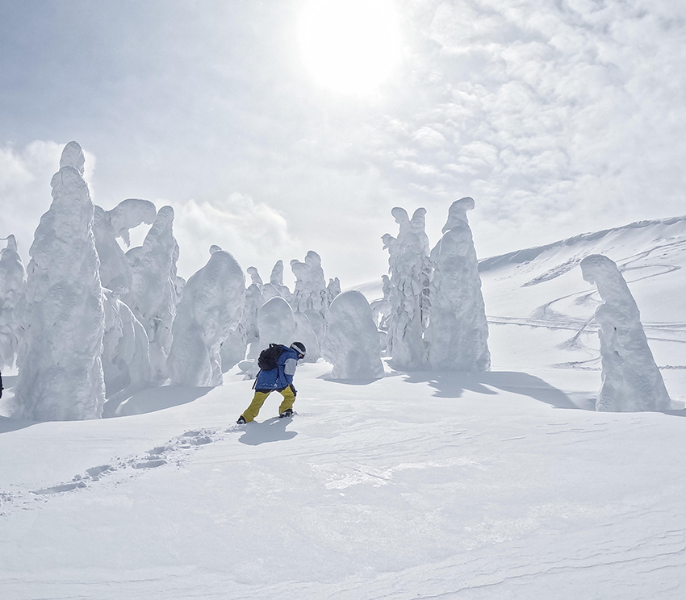

–山形藏王樹冰–
| 山形藏王樹冰也被稱為”雪怪”，是個大自然在冬季限定的藝術品。 |
在疫情爆發前，已有計畫要到藏王滑雪和看樹冰，但就在要出發的前一刻，航班停駛只能被迫取消。今年疫情趨緩，開放出國觀光，在同事的邀約下，最後一刻才決定出發完成三年前的計畫：藏王滑雪。剛好又遇到剛開放仙台機場的航班省下了不少移動時間，仙台機場有直達藏王雪場的巴士，從海港沿路往山裡開，積雪也越來越高，內心也越來越興奮，天還沒黑就到了藏王雪場，前往民宿Check in後，很快地整理好裝備，到雪場和同事們會合來場夜滑暖身。
久違的snowboard，膝蓋彎曲，重心轉換，髖骨的運用，從出發前就一直在腦中模擬著各滑雪技巧，來到雪道後，一個S turn後加速，整個人就摔了一屁股，站起來後拍了拍身上的雪繼續滑，雪板壓雪的聲音，鋼邊劃過雪地的痕跡，耳中傳來的只有自己的呼吸聲，熟悉又陌生的snowboard，最後來個帥氣的甩尾剎車，開啟了這次旅行的序幕。
隔天就是這次的行程重點之一：藏王樹冰，因為要順便滑雪下山而帶著雪板，雪場的一般觀光客人潮也很多，第一段的Gondola只開放給一般遊客搭乘，我們只能搭滑雪者專用的lift轉了四次才到半山腰，再接著搭第二段的Gondola上山頂。
到達山頂站時天氣還算不錯，雲層比想像中厚，但沒有起霧還是可以看見整片樹冰，先看到了只剩下頭的地藏尊，簡單的參拜與祈求平安後，就步行前往山頂，雖然天氣不錯，但穿著整套雪衣爬著山，走一走還是會累個半死。
| 往山頂，雖然天氣不錯，但穿著整套雪衣爬著山，走一走還是會累個半死。 | |
到了山頂，一整片白茫茫，腳下踩著雪地，天空白雲有點厚，沒看到壯闊的風景只有被狂風吹滿臉，沒幾分鐘就崩潰，然後前往另一頭神秘的樹冰森林區，往更深處走，走進了冰樹群裡更能發現樹冰的巨大，聽說今年的樹冰已經比往年小了許多，但靠近看還是能感受到這大自然的奧秘。
|  |
看完了樹冰，回歸到本次旅遊的重點之二：滑雪。從山頂站開始下滑，雪道不算太寬，兩旁都是樹冰，穿梭在樹冰中滑雪是藏王滑雪場的特色，藏王雪場的雪道還蠻多條的，但很多聯絡道是丘陵地形對snowboard比較吃力一點，常常速度不夠就得脫板用走的，花了兩天把全部雪道都滑了一遍(除了黑線)，而且這幾天的天氣也不錯，是個滿分的行程。
然後又來到山頂，想再一次從樹冰群的雪道滑下來，但時間點不好，剛好遇到了大霧，美麗景色瞬間變成了沉默之丘場景，能見度剩沒幾公尺，很猶豫到底是要滑下山還是坐纜車下山，最後，我們還是硬著頭皮慢慢滑下來，也是個很特別的體驗。
幫大家科普一下： 樹冰奇景何以如此罕見？根據研究，樹冰的形成，是因日本東北地區特殊地形和氣候所造成。從日本海吹來的溫暖水氣，先在青森椴松樹梢結成霧冰，接著大樹也凝結，到1、2月氣溫低到攝氏10到12度、風速達每秒10至15公尺，強風颳起地面積雪加速冰雪凝結，遂造就龐大的樹冰。
番外篇： 結束了滑雪行程，變成一般觀光客模式後，再次的前往山頂看樹冰，結果天氣比前幾天還好，無雲的天氣，有個完美的藍天，看到更漂亮的藏王樹冰。另外，在藏王還有個很特別的活動：樹冰幻想迴廊，會在晚上搭乘壓雪車到滑雪道上，可以在滑雪道看樹冰，這也是個可以更近距離的接觸到雪道和看到樹冰。